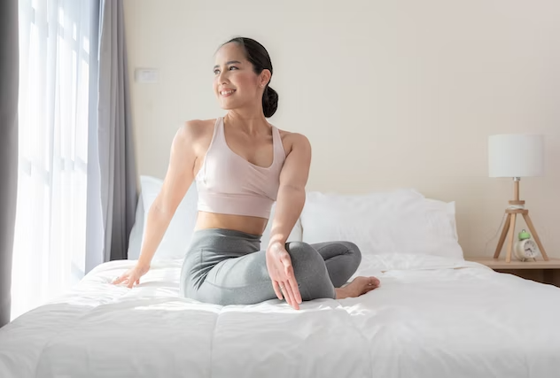
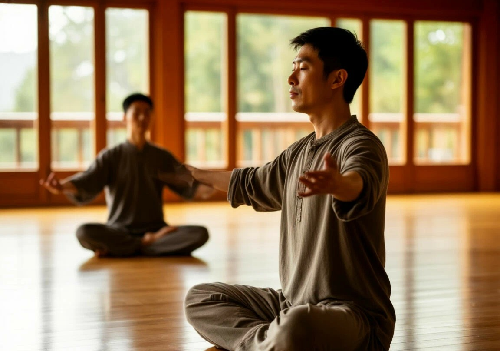
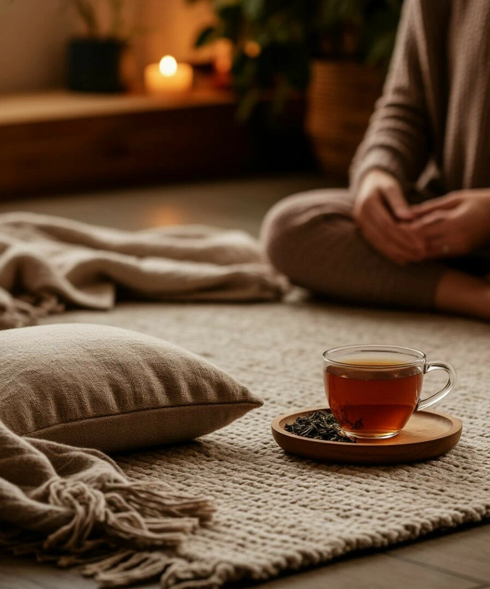
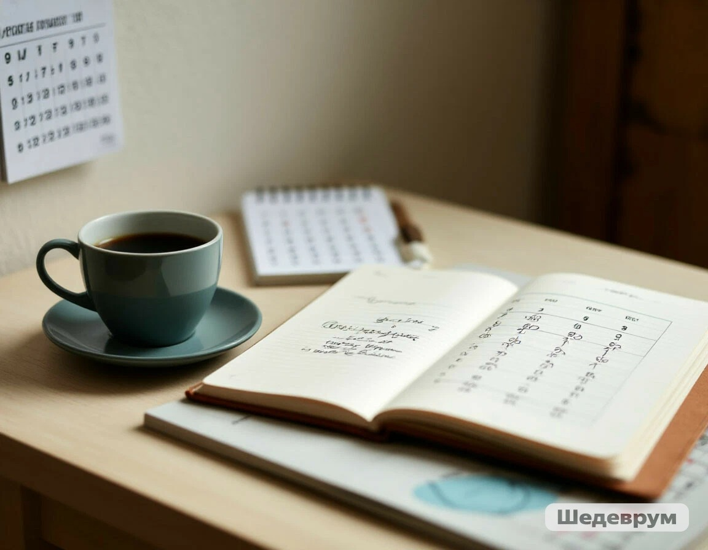
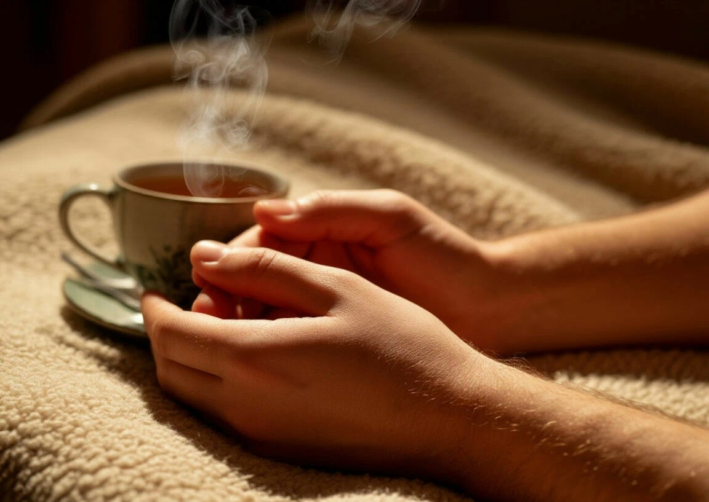
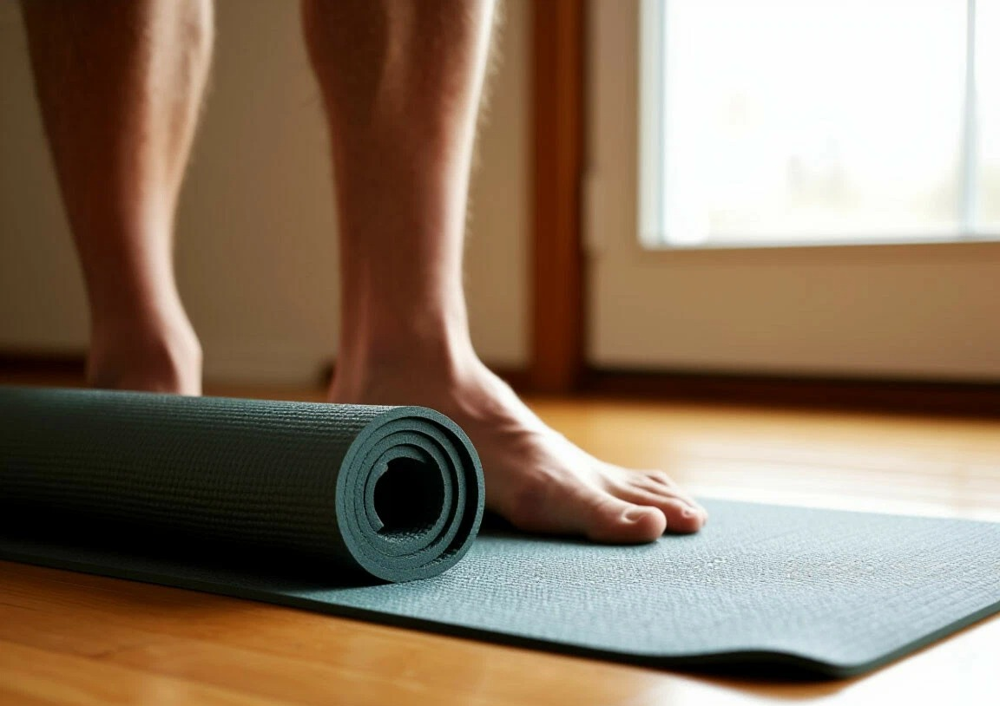
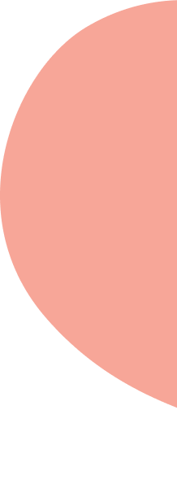
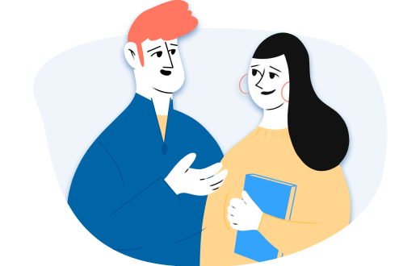

Главная>Блог>Тело знает: телесные практики для психического здоровья
Тело знает: телесные практики для психического здоровья
Автор: Александр Белов, телесно-ориентированный терапевт· 06.03.2026

Почему тело помнит всё?
Наше тело — это не просто биологическая оболочка, но и хранилище всего нашего жизненного опыта. Психотравмы, хронический стресс и подавленные эмоции не исчезают бесследно: они «записываются» в мышечных зажимах, паттернах дыхания и особенностях осанки. В психологии и нейробиологии этот феномен называют «телесной памятью». Мозг может вытеснять болезненные воспоминания, чтобы защитить психику, но тело продолжает удерживать напряжение, связанное с пережитым событием. Именно поэтому без проработки телесных блоков часто невозможно достичь устойчивого эмоционального равновесия.
Работа с телом позволяет обойти цензуру сознания и получить доступ к тем ресурсам и переживаниям, которые были «заморожены» в прошлом. Когда человек через движение, дыхание или тактильные практики возвращает себе контакт с собственными ощущениями, запускается естественный процесс саморегуляции. Тело обретает способность не просто «помнить» боль, но и отпускать её, возвращая психике утраченную целостность.
Тело — это подсознание, вылепленное из плоти. То, что разум предпочел забыть, кожа, мышцы и кости помнят с пугающей точностью. Исцеление начинается не тогда, когда вы всё поняли головой, а когда тело наконец получает разрешение закончить ту реакцию, которую ему прервали когда-то давно.
Александр Белов
Виды телесных практик
В отличие от фитнес-подходов, йога в терапевтическом ключе фокусируется не на достижении идеальной формы, а на восстановлении связи между движением и дыханием. Мягкие, осознанные асаны помогают снять хроническое мышечное напряжение, в котором «законсервированы» стресс и тревога. Практика учит отслеживать телесные сигналы в моменте, возвращая способность к саморегуляции и эмоциональной устойчивости.
Древние китайские практики построены на плавных, текучих движениях и концентрации на внутреннем ощущении энергии. Они особенно эффективны при работе с последствиями выгорания и затяжного стресса, так как мягко переключают нервную систему из режима «бей или беги» в состояние покоя и восстановления. Регулярная практика развивает телесную осознанность без перенапряжения, что делает её доступной для людей с разным уровнем физической подготовки.

Телесные практики — это не про сложные позы и соревнование с собой.
Чем шире доступный вам репертуар телесных и эмоциональных реакций, тем выше ваша устойчивость к стрессу, тревоге и жизненной неопределенности. Телесные практики помогают этот репертуар расширять: через движение и дыхание мы учимся замечать привычные автоматизмы и обретаем свободу выбирать, как реагировать.
Тело — это подсознание, вылепленное из плоти. То, что разум предпочел забыть, кожа, мышцы и кости помнят с пугающей точностью
Мы знаем, что нуждаться в поддержке в трудные периоды абсолютно нормально. Одна из задач телесно-ориентированной работы — помочь человеку пользоваться доступными реакциями в той пропорции, которая подходит именно ему. Без оглядки на то, «как правильно» или «как у других».

Телесные практики работают не через убеждение или анализ, а через прямое переживание. Когда человек в безопасном пространстве возвращается к застывшему движению, завершает прерванный дыхательный цикл или просто позволяет себе ощутить опору под ногами — в нервной системе запускается процесс естественной разрядки. То напряжение, которое годами копилось и удерживало психику в режиме готовности к угрозе, начинает растворяться. Это не требует пересказывать травматичную историю: тело знает, как исцеляться, если ему позволить.
Регулярная практика не требует много времени. Пять минут осознанного дыхания утром, пауза, чтобы почувствовать стопы во время ходьбы, или несколько плавных движений в перерыве между делами — всё это постепенно меняет настройку нервной системы. Устойчивость рождается не из героических усилий, а из маленьких, но регулярных возвращений в контакт с собственным телом.
Упражнение #1
Сядьте удобно, закройте глаза и направьте всё внимание на дыхание. Не пытайтесь его менять — просто наблюдайте. Затем начните медленно удлинять выдох: пусть выдох станет длиннее вдоха. Делайте это мягко, без усилия. С каждым выдохом представляйте, как напряжение покидает тело вместе с воздухом. Продолжайте 2–3 минуты. Смысл в том, чтобы через дыхание активировать парасимпатическую нервную систему, которая отвечает за покой и восстановление.
Как сделать телесные практики привычкой?
Начните с малого: не ставьте цель заниматься по часу каждый день. Лучше выделите 5–10 минут, но регулярно. Важнее не длительность, а предсказуемость — тело и психика быстрее откликаются на стабильность, чем на редкие интенсивные нагрузки.
Привяжите практику к уже существующему ритуалу. Например, делайте несколько осознанных дыхательных циклов сразу после утреннего кофе или перед сном. Когда новое действие закрепляется за привычным, оно перестаёт требовать дополнительной воли и становится естественной частью дня.

Регулярность рождается не из силы воли, а из бережного отношения к себе. Выберите комфортное время, разрешите себе делать меньше, чем «надо», и позвольте практике быть не подвигом, а способом позаботиться о себе. Так тело перестанет воспринимать упражнения как ещё одну обязанность и начнёт ждать их как ресурс.
Чем чаще вы возвращаетесь в контакт с телом в повседневной жизни, тем прочнее становится нейронная связь между ощущением и спокойствием. Со временем вам уже не нужно будет специально выделять время на практику — способность замечать напряжение и мягко возвращать себя в равновесие станет вашей автоматической реакцией.
Упражнение #2
Выберите одно простое действие, которое вы и так делаете каждый день: чистите зубы, ждёте, пока заварится чай, или идёте от машины до дома. В этот момент направьте всё внимание на телесные ощущения. Почувствуйте стопы на полу, температуру воздуха, движение дыхания. Всего 30 секунд полного присутствия. Делайте так каждый день в течение двух недель — и вы заметите, как телесная осознанность начнёт проявляться сама собой, без напоминаний.


Телесные практики работают не через убеждение или анализ, а через прямое переживание. Когда человек в безопасном пространстве возвращается к застывшему движению или просто позволяет себе ощутить опору под ногами — в нервной системе запускается процесс естественной разрядки. То напряжение, которое годами копилось и удерживало психику в режиме готовности к угрозе, начинает растворяться.
Регулярность рождается не из силы воли, а из бережного отношения к себе. Выберите комфортное время, разрешите себе делать меньше, чем «надо», и позвольте практике быть не подвигом, а способом позаботиться о себе. Так тело перестанет воспринимать упражнения как ещё одну обязанность и начнёт ждать их как ресурс.
Именно в этом и заключается глубинная задача телесной работы: не навязать человеку единственно «правильный» способ справляться с трудностями, а помочь ему исследовать собственный репертуар реакций — и научиться пользоваться им гибко, выбирая то, что подходит здесь и сейчас. В той последовательности, в той пропорции и в том объёме, которые резонируют именно с вашим состоянием, вашим телом, вашим ритмом. Без оглядки на то, «как правильно» или «как у других».
Упражнение #3
Встаньте, расставьте ноги на ширине плеч, слегка согните колени. Начните медленно, как будто в замедленной съёмке, переносить вес тела с одной ноги на другую. Дышите свободно. Почувствуйте, как стопы контактируют с полом, как движение раскачивает тело снизу вверх. Через минуту замрите и прислушайтесь к ощущениям. Смысл в том, чтобы вернуть чувство опоры и текучести, снять застылость, которая часто сопровождает хронический стресс.
SelfСамооценка и самопринятиеУпражненияЧувства и эмоцииТревога


Когда нужно обратиться к специалисту
Если напряжение не отпускает, а привычные способы не работают — обратитесь к нам.